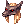
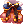
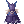
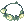
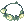

Kato's Tank Doram Guide
| This guide has not been updated in a while. | ||
|---|---|---|
| Information on this page may be obsolete and outdated. Please refer to the author for information on future updates. |
||
| Summoner | |||||||||||||||||||
|---|---|---|---|---|---|---|---|---|---|---|---|---|---|---|---|---|---|---|---|
 | |||||||||||||||||||
| Job Base: | Summoner | ||||||||||||||||||
| Written By: | Kato | ||||||||||||||||||
| |||||||||||||||||||
Overview
Hello guys, my name is Kato (also known as Zanni, the Megaman Rebel), I’ve been playing on NovaRO for a long time now and Summoner is my second favorite class on Nova (losing only to Rebels). When our beloved Cats first came to this server on the 2016 client, I couldn’t help but be curious to try out the class and, before I knew it, I loved its uniqueness a lot. This guide is here to detail the build I play the most (and specialize in), which is my Pure-Tank Doram build. This build is capable of tanking most High-Tier MVPs in the game if geared correctly, with the awesome skills this class gets and some rather simple equipment pieces. Currently this class doesn’t have all the content from kRO; but anyone who thinks this class is “unviable” as of now is horribly wrong.
Pros: Uniqueness, endgame gear doesn't depend that much on Instance rewards or enchantments, achieves high performance with simple items, very straightforward (only loses to Sura in that aspect), low dependence on consumables, good lurer, capable of self-healing most of its HP quickly on emergencies.
Cons: Vulnerable to Dispell (greatest weakness), has to watch out when mobs have high damage output. Also can't auxiliate in damaging the enemy like some other hybrid tanks can.
Oh, this is important: I don't recommend a Tank Doram as your first build in the server because the endgame gear for it is somewhat rare to find in player market (and although many pieces of equipment can be farmed, it's near impossible to do so with a Tank Doram); only start this build when you have enough money reserve or if you can farm with other characters (like a Ranger or a Rebel, for example).
In case you need still have some doubts about Tank Doram after reading this guide, feel free to contact me as "Zanni" on the Nova Forums, or as "Kato" in the Nova Discord. I'll try to answer them the best way I can ^^
Stats
The recommended stats for pure tanking are:
- STR - 1~30. This stat is importantly mainly for weight for eventual consumables and for equipment you’ll have to swap during instances; but once you get 10 Gym Passes (from the Cash Shop or Mysterious Slot Machine), you won’t need this stat anymore.
- AGI - "rest"~120. Why so high? Each 5 AGI points add 1 DEF. Also, when in certain fights, high Flee makes your life much easier. When coupled with Rangers’ Wind Walk, Increase Agi and your own Arclouse Dash, you can have enough Flee to make MVPs like Kimi miss their attacks on you!
- VIT - 120. This is one of the most important stats for tanks (actually, the most important for the majority of them), since it raises HP, DEF and MDEF, as well as giving Stun immunity when above 100; but for Dorams it is specially valuable. High MaxHP is vital to Tuna Party (which I’ll detail later on skill section) to add even more tanking power. Don't go over 120 because the cost is too high and Doram doesn't have the extra stat points other tanks get through transcending.
- INT - 70~80. Important mainly for MDEF, Variable Cast Time reduction, and MaxSP. Also, if your total INT is over 100 (including bonuses), it gives full Silence immunity.
- DEX - 80~100. Useful specially for Variable Cast Time reduction and Hit.
- LUK - 1. LUK could add some Perfect Dodge, but I don't think it's worth the cost - your stat points are more important in other places.
But remember: you can fine tune these stats to suit your own needs, if you want to!
Skills
Although Tank Doram gameplay focuses mainly in the skills Tuna Party, Tuna Belly and Stoop, Doram has a few more skills it needs to have (some are pre-requisites - which is bad cause Summoners only have 49 skill points to spend -; but also some of them are actually good). I will list only the ones from the 3 main skill trees that I use (or find notable) when going to Instances, plus one more that actually makes this build as viable as it is:
| Skill Type | Skill | Level | Descripition |
|---|---|---|---|
| New Basic Skill |  Stoop Stoop
|
1 | The divine blessing of Tank Doram. Reduce damage by 90% for 6 seconds, while allowing autoattacking and even the casting of other skills, and has 12 second cooldown. This skill is cancelled when Doram moves in any way (whether you move, or are pushed away by knockback). Better coupled with Tuna Party for the best possible tanking situation - you are un-hittable, and thus suffer no knockback. |
| “Sea” Skill Tree |  Fresh Shrimp Fresh Shrimp
|
5 | A skill that restores HP over time, which you can cast on anyone. Very good not only for you, but also to support your party members. |
 Bunch of Shrimp Bunch of Shrimp
|
5 | Not much useful for you, but this +10% Atk and +10% Matk can add some nice damage to your party. Costs 1  Shrimp. Level 5 is required for the second passive buff from Power of Sea. Shrimp. Level 5 is required for the second passive buff from Power of Sea.
| |
 Tuna Belly Tuna Belly
|
5 | Get this at level 5, to instantly self-heal 90% of your HP when cast. Makes the life of the party’s Archbishop MUCH easier. 15 second cooldown. | |
 Tuna Party Tuna Party
|
5 | A shield which can hold up to 50% of your MaxHP worth of damage when in Level 5, similar to Kyrie Eleison. Until you receive that much damage, all attacks given to you work like “missed attacks” (you still can be given status conditions like Stone Curse and Silence, though). Has a base 30 second cooldown at level 5, but it can be reduced greatly through equipment. | |
 Power of Sea Power of Sea
|
1 | A awesome passive buff. First passive buff is raising your healing effectiveness by 10%; and if 20 skill points are spent on this skill tree (aside from the own Power of Sea skill point), you gain another 20% healing effectiveness boost. Also raises your MaxHP. Good for both your Tuna Belly and Fresh Shrimp. | |
| “Land” Skill Tree |  Silvervine Stem Spear Silvervine Stem Spear
|
3 | Optional skill; only necessary as a pre-requisite. Skip it if you don’t intend to use Silvervine Root Twist. |
 Silvervine Root Twist Silvervine Root Twist
|
3~5 | Optional utility skill. Traps any Non-boss monster for 11 seconds at level 3, 15 seconds at level 5. I don’t think it's much useful since it doesn't trap the bosses; but you may find a good use to it. | |
 Catnip Meteor Catnip Meteor
|
1~3 | “Optional” Skill. In case you REALLY wanted to have Silvervine Root Twist, you’ll have to resort to this as your only Crowd Control skill. I don’t like it when tanking because it has 3 seconds of base Fixed Casting Time, besides the Variable Cast Time - so to reach close to instant cast with it (and thus fulfill the objective of drawing attention of mobs quickly), you would need a high-refine (+7 at least in all gear) Elegant Set, have an Archbishop cast Sacrament on you constantly, and have full reduction of Variable Cast Time. Also has 6 seconds of Cast Delay, which could be a burden. | |
| “Life” Skill Tree | Picky Peck | 3 | Pre-requisite to Arclouse Dash. |
 Arclouse Dash Arclouse Dash
|
5 | +40 AGI (and thus, Flee - yay!) and increased Movement Speed. Very good when luring. Mandatory skill. | |
 Scar of Tarou Scar of Tarou
|
3 | Optional skill. Requirement for Lunatic Carrot Beat. | |
 Lunatic Carrot Beat Lunatic Carrot Beat
|
5 | “Optional” skill; this here is actually the good Crowd Control skill. Has very small cast time, allowing you to draw attention from monsters effectively. Doesn’t serve many more purposes in tank build. (Contrary to the comment on Divine Pride page, on NovaRO no carrots are required to cast it). | |
 Power of Life Power of Life
|
1 | Here it is, the +20 Flee, in case you chose to follow this Skill Tree. Also +20 Hit to actually hit the monsters when you’re doing Crowd Control. |
Equipment
Welp, now that skills are out of the way, we should focus on equipment. Doram is very peculiar in this part because it has 3 sets exclusive to the class (Private Set, Luxury Set, and Elegant Set), and every single build needs them in order to be effective. Moreover, the sets themselves are the best mid-start, mid-end and endgame gear (respectively) for any Doram as of now. On the other hand, outside of early weapons (that you can find in Lasagna Field's and Basilisk Nest 1st Floor's monster drops), until Doram reaches level 100 you have little to no armor pieces to work with outside of Eden Group equipment - what kinda binds all Dorams to Boya's and Ur's quests before level 100. So, let's get started.
Headgears
There is no big secret in here. It's standard "all-classes" tanking headgear, since Doram doesn't have anything specific in this part.
| Item | Type | Way to obtain | Notes |
|---|---|---|---|
 Eden Group Hat II [1] Eden Group Hat II [1]
|
Upper | Eden Group | Obtainable from Ur's quests at Eden (ideally the 70~79 one). First Headgear you should get. Good for being refinable and having a slot for HP-increasing cards. You shouldn't be using this for long, though. |
|  Anubis Helm | Upper | Cash Shop | Bosses do -10% less damage on you while you're wearing this. A must-have in your arsenal. |
 Asgard Blessing [1] Asgard Blessing [1]
|
Upper | Buyable at Vending Machine inside Eden | +2 All Stats, Resistances to all elements, nice HP/SP recovery (that works even when you are overweight), and a slot. A common tanking headgear. |
 Monocle [1] Monocle [1]
|
Mid | Monster Drop | Doesn't give you any stats, but has a slot and it's farmable - making it much more valuable than it looks. |
 Blush [1] Blush [1]
|
Mid | Quest in Lutie | The base, unslotted blush is easily craftable by handing 100 100 Alice's Apron to the NPC in Lutie (xmas 114, 296); the harsh part is that it needs a Spirutal Auger from Cash Shop in order to be slotted. Still, if you manage to get your hands on the Auger, this slot is very valuable.
(Also, the Blush is very useful to Full-Support Archbishops; so in case you can swap from this, it can be resold easily). |
 Black Frame Glasses [1] Black Frame Glasses [1]
|
Mid | Cash Shop | This is in fact the best mid headgear you can get, but it is VERY expensive since they are best-in-slot for many classes. They add 1 INT and 2 MDEF; but, just like blush, need to be slotted using the Spiritual Auger. Adding up the price for the Glasses and the Auger, it's a total expense of 12.5k Cash Points! |
 Umbala Spirit Umbala Spirit
|
Lower | Cash Shop; | It is obtained from Lower Headgear Box. +1% MaxHP. The only lower headgear I know that does that. |
 Gentleman's Pipe Gentleman's Pipe
|
Lower | Cash Shop | Since there's a lot of Demihuman bosses out there (like Duneyrr in Monster Hunter), this can come in handy. |
| Card | Monster Drop | +1% MaxHP per 2 refines of the headgear. Better when slotted in a overrefined upper headgear. | |
| Essence of Evil Vit3 | Card | Temple of the Demon God instance | Extra VIT (more HP), DEF and MDEF. Put it on the mid headgear. |
Armor
As I said before, this is where the Doram Sets come into play. Although the first one is cheap to buy, you'll really need help getting the 140 and 175 ones.
| Item | Type | Way to obtain | Notes |
|---|---|---|---|
 Eden Group Armor Eden Group Armor
|
Armor | Eden Group | Obtainable from Ur's quests at Eden (ideally the 70~79 one). Nice free starting armor until you can use Doram Armor Sets. |
 Doram Private Suit [1] Doram Private Suit [1]
|
Armor | Doram Shop, Monster Drop | There are 2 NPCs - one in Prontera(126, 212), and one in Lasagna(164, 163) - that sell this armor by 100k Zeny. +2000 HP, extra INT and DEX every 3 refines. When worn with Shoes and Manteau, makes cast uninterruptible and reduces Fixed Cast Time reduction by the sum of Set's refines. Best armor at level 100. |
 Doram Luxury Suit [1] Doram Luxury Suit [1]
|
Armor | Monster Drop | +10% MaxHP and SP, extra INT and DEX every 2 refines. Also makes cast uninterruptible and reduces Fixed Cast Time when set is complete, much like Private Set. Swap to this as soon as you're 140 if you have the money to buy the full set. |
|  Doram Elegant Suit [1] | Armor | Monster Drop | +15% MaxHP and SP, extra INT and DEX EVERY refine. Makes cast uninterruptible and reduces Fixed Cast Time when set is complete, just like the previous ones. Level 175 requirement, but I couldn't think of a better tanking armor in the entire game. |
| Card | Monster Drop | +10% MaxHP. As easy as this. When you don't need to deal with troublesome magic (like Dark Cross), this is the best answer to your problems. | |
| Element Changing cards | Card | Monster Drop | When you DO need to deal with troublesome elemental magic, it's good to carry a second armor in your inventory to cope with it, carded with these cards. BY FAR, the most useful of these cards is Be aware that changing your armor's element makes you receive the same extra resistances and weaknesses the element has (for example, using Dokebi card makes you receive less damage from Water attacks, and more damage from Earth attacks) - what can be both good and bad. Thus, be careful and pay attention to what the monsters are casting on you. Taking a look at the Element Tables is usually a good idea. |
Weapons
Since you are tank, you won't be dealing much damage; so you want the weapon mainly for its slots.
| Item | Type | Way to obtain | Notes |
|---|---|---|---|
 Eden Foxtail Staff III Eden Foxtail Staff III
|
Weapon | Eden Group | Obtainable from Ur's quests at Eden (ideally the 70~79 one). You'll need this weapon while you can't tank for others and need to kill stuff yourself. Value this a lot until you can use the true final tanking weapon (you won't need anything else). |
 Fine Foxtail Model [2] Fine Foxtail Model [2]
|
Weapon | Monster Drop | +5% MaxHP, 2 slots. This is all a tank asks for. |
| Card | Monster Drop | +1 Vit, +100 MaxHP. Very basic, yet very cheap. The starting card. | |
| Card | Old Glast Heim Instance | 5% Damage Reduction from Large and Medium-sized monsters when coupled with a Khalitzburg Knight card in your shield, asides from the damage boosting. Nice effects; but VERY expensive. Also, if you need to swap to another shield without Khalitzburg Knight card, this one loses its damage-reduction perk. Not the best when Pure Tanking, but worth if you're a Physical DpS-Tank hybrid. | |
| Essence of Evil Vit3 | Card | Temple of the Demon God instance | More HP than Fabre Card, and even more DEF and MDEF through the weapon. Doesn't depend on other cards in your shield to be useful at all times. Definitely best-in-slot in my opinion when Pure Tanking. |
Shields
This is a VERY important part, since the cards you equip on your shield can give a HUGE boost in your performance. Understanding what you're tanking for your party and having the correct card to counter it is very vital to any tank.
| Item | Type | Way to obtain | Notes |
|---|---|---|---|
 Stone Buckler [1] Stone Buckler [1]
|
Shield | Monster Drop | A nice starting "all-classes" shield, with everything you need - a slot. |
 Immune Shield [1] Immune Shield [1]
|
Shield | Monster Hunter (coupon trading), Battlegrounds (valor badge exchange), Vending Machine, Loyalty Shop | Good Neutral resistance. Better than Valkyrja's Shield against Neutral property at +7 and above, and against Wind and Earth when at least +9; still, since not many Wind and Earth property attacks are endgame stuff, +9 is a big investment for something very situational. Don't overrefine this unless you got lots and lots of Zeny to spare after you buy/farm the rest of gear. |
 Valkyrja's Shield [1] Valkyrja's Shield [1]
|
Shield | Monster Drop | Resistances, MDEF, and a slot. Best defensive shield for Doram. |
| Card | Monster Drop | Very straightforward and good starting card. | |
| Card | Monster Drop | 15% damage reduction from all monsters. Still holds up as an excellent card, even outperforms the following two in certain conditions. | |
| Card | Old Glast Heim Instance | Good when both MVP and the mobs are large/medium (most are, although there are exceptions), and both have high burst damage (looking at you, Amdarias and your Raydric Archers!). | |
| Card | Monster Drop | The Classic MVP fighting card. 40% damage reduction from Boss Protocol monsters, 40% damage increase from non-Boss monsters. Best used when the MVP doesn't summon many powerful slaves (most of the MVPs don't), or when the slaves are Boss Protocol as well. | |
| Racial or Element Resistance Card | Card | Monster Drop | Very straightforward too; when the MVP and mobs are all from the same Race/Element (like in Charleston Crisis, where all monsters are "Demon"/Neutral; or like Ifrit and its mobs, where all are "Formless"/Fire), having one of these can be the smartest choice. Examples of this type of card are |
Garments
What a tank looks for in Garments are extra stats, flee and/or resistances. Here's what you need:
| Item | Type | Way to obtain | Notes |
|---|---|---|---|
|  Eden Group Manteau II | Garment | Eden Group | Obtainable from Ur's quests at Eden (ideally the 70~79 one). Flee and Neutral resistance. Pretty optimal until you get the Doram Armor Sets. |
 Doram Private Manteau [1] Doram Private Manteau [1]
|
Armor | Doram Shop, Monster Drop | 100k Zeny cost, a bit of Neutral resistance and Flee. It's here by being part of the Set and also having a slot. |
 Doram Luxury Manteau [1] Doram Luxury Manteau [1]
|
Armor | Monster Drop | More Flee, more Neutral resistance. It's here for the same reason: Set and slot. |
 Doram Elegant Manteau [1] Doram Elegant Manteau [1]
|
Armor | Monster Drop | Flee, Neutral resistance, extra INT and DEX for helping with cast, being part of the best set, and a slot? Count me in! |
| Card | Monster Drop | One of the most classic tanking cards. Pretty much all non-skill/forced-neutral skill attacks have their damage reduced by 20% with this card, with no drawback. Get it. | |
| Card | Monster Drop | More situational, when there are non-neutral ranged attacks. Still a solid choice. | |
| Card | Monster Drop | Extra MaxHP. Stacks up nicely with buffs to boost Tuna Party. |
Shoes
Since Doram can no longer use Temporal Boots of Vitality, you'll have to use the standard shoes. They do have nice perks to them though. Let's take a look.
| Item | Type | Way to obtain | Notes |
|---|---|---|---|
 Eden Group Boots IV Eden Group Boots IV
|
Shoes | Eden Group | Obtainable from Ur's quests at Eden (ideally the 70~79 one). The first shoe you'll get. Useful for HP/SP recovery until you start using the Doram Armor Sets. |
 Doram Private Shoes [1] Doram Private Shoes [1]
|
Shoes | Doram Shop, Monster Drop | 100k Zeny for HP/SP recovery and slot. Part of the Set. |
| Doram Luxury Shoes [1] | Shoes | Monster Drop | HP/SP restoration, slot, part of set. |
 Doram Elegant Shoes [1] Doram Elegant Shoes [1]
|
Shoes | Monster Drop | Raising my MaxHP by 10% and my MaxSP by 5%, and having a slot? I want that! |
| Card | Monster Drop | +10% MaxHP and 1 extra VIT. A classic as well. | |
| Card | Monster Drop | Less MaxHP than Green Ferus, but the MaxSP is very good to prevent you from running out. |
Accessories
| Item | Type | Way to obtain | Notes |
|---|---|---|---|
 Silversmith Bracelet [1] Silversmith Bracelet [1]
|
Accessory | Old Glast Heim Instance | Very cheap, and very good. +1 all stats and MDEF. Nice starting accessory. |
 Cute Grass Necklace [1] Cute Grass Necklace [1]
|
Accessory | Monster Drop | ONE OF THE MOST ESSENTIAL PARTS OF THE BUILD, and easily farmable. I can't stress how vital this Tuna Party cooldown reduction is. Get this as soon as possible (it is dropped by Stapo at Veins Field with 0.3% chance). |
 Fresh Tuna Talisman [1] Fresh Tuna Talisman [1]
|
Accessory | Doram Token Exchange at Lasagna | Another VERY solid choice. Reduces Tuna Party cooldown by 5 seconds, and gives a low chance to autocast it when attacked. Although some prefer the guaranteed 14 second reduction of 2 necklaces, combining this one 1 necklace gives a total 12 second cooldown reduction, besides the autocast chance. Not a bad thing by any means. |
 Superior Tuna Talisman [1] Superior Tuna Talisman [1]
|
Accessory | Doram Token Exchange at Lasagna | Haven't experimented much with this. When worn with Elegant Set and Cute Grass Necklace, gives 3 VIT, +25% HP, +15% SP, +30% healing, and ability to use level 9  Heal. The extra VIT and HP when with full set do look good, besides a higher support ability in Heal and a slot; but in a world where many MVPs can dispell (or even knockback) the tank, I prefer the Tuna Party cooldown reduction at all times. Heal. The extra VIT and HP when with full set do look good, besides a higher support ability in Heal and a slot; but in a world where many MVPs can dispell (or even knockback) the tank, I prefer the Tuna Party cooldown reduction at all times.
|
| Card | Monster Drop | A very cheap/easy to obtain card that adds 2 VIT. Good when starting. | |
| Essence of Evil Vit3 | Card | Temple of the Demon God instance | Look who showed up again. A Tank can never have "enough VIT". |
Doram Token Exchange
Since I mentioned Doram Token Exchange, I should add info about this, since it is a very important thing for all Doram builds. In the upper left part of Lasagna, there are 4 NPCs (the Chiara Family) that can trade Doram equipments for a set number of  Doram Tokens, and, with the tokens, you can buy or upgrade exclusive accessories.
Doram Tokens, and, with the tokens, you can buy or upgrade exclusive accessories.
You get 2 tokens by exchanging Cute Grass Necklace [1],  Charm Grass Necklace [1],  Fresh Grass Necklace [1] and lv 100 Foxtails; 3 tokens with Luxury Set pieces and lv 140 Foxtails; 4 tokens for Elegant Set pieces and lv 175 Foxtails.
Charm Grass Necklace [1],  Fresh Grass Necklace [1] and lv 100 Foxtails; 3 tokens with Luxury Set pieces and lv 140 Foxtails; 4 tokens for Elegant Set pieces and lv 175 Foxtails.
Fresh Tuna Talisman [1] is obtained by exchanging 30 tokens, whereas Superior Tuna Talisman [1] is obtained by exchanging 10 tokens for  Lesser Tuna Talisman [1] and then upgrading it twice (30 tokens for first upgrade, 90 tokens for second upgrade).
Lesser Tuna Talisman [1] and then upgrading it twice (30 tokens for first upgrade, 90 tokens for second upgrade).
(For further info, refer to Doram Equipment Exchange page - as there are also talismans for the Magical Branch and the Physical Ranged Branch)
Shadow Gear
For those of you that aren't familiar with them, Shadow Gears are equipment pieces that go in your costume tab. In Nova, they are obtained through Monster Hunter. For Pure-Tanking, I'd recommend Sturdy Shadow Set, since it gives you 5 VIT when set is complete.
Builds
Well, now that we got Stats, Skills and Equipments out of the way, I'll explain the build that I use. I have like a set of things that I always carry with me for an all-round tanking; only swap from these when I'm trying to tank a specific thing that is more demanding than what I have (which is very rare).
Stats
The stats I use are:
- STR 1
- AGI 120
- VIT 120
- INT 80
- DEX 100
- LUK 1
I use this set of stats because I really like the flee, I can quickly cast Tuna Belly to self-heal with the Variable Cast Time reduction, I can hit monsters considerably well to draw their attention, and I still have the high HP, DEF, and SP.
(Again, please remember this is only a guideline; your particular tank build may have some different stats to better suit your tanking needs)
Skills
As I explained before, the "Sea" skill tree is maxed for bonus healing. Also, I prefer to have level 5 Lunatic Carrot Beat as my Crowd Control and Power of Life for more Flee (since I already spent points in Arclouse Dash). This allows me to draw Aggro and lure monsters very effectively for the AoE DpS-ers on the party (like Rangers, Rebels, GXs or Genetics) and works VERY well to the most MVPs I tank (like Kimi, Amdarias, all 5 MVPs from Bios-Morse-Demon God Instances, Monster Hunter bosses, and a couple more).
(Note: So far, I haven't still gotten the hang of tanking Beelzebub, Rangdris and Bio Labs' MVPs - Dispells/Too many fast hitting mobs X.X; but if I do manage to learn the build necessary for them, I won't hesitate to add it to this Guide).
Equipment
My most frequent equipment combos are
- Upper Headgear: +4 Asgard Blessing [1] (I like the SP recovery, works even when I get overweight) with
 Bungisngis Card (it's hard find +6 and above; but this works fine.)
Bungisngis Card (it's hard find +6 and above; but this works fine.) - Middle Headgear: Monocle [1] (farmable) with the Essence of Evil Vit3 I mentioned
- Lower Headgear: Umbala Spirit
- Armor: +6 Doram Elegant Suit [1] carded with Peco Peco Card or Bathory Card
- Weapon: Fine Foxtail Model [2] (no need for refines when pure tanking) with 2 Essence of Evil Vit3
- Shield: +4 Valkyrja's Shield [1] with Alice Card
- Garment: +6 Doram Elegant Manteau [1] with Giant Whisper Card (against mobs this is enough) or Raydric Card (this one is so good)
- Shoes: +6 Doram Elegant Shoes [1] with Verit Card (I can self-heal a lot with this sp bonus)
- Accessories: 2 Cute Grass Necklace [1] OR 1 Cute Grass Necklace [1] and 1 Fresh Tuna Talisman [1] - always carded with Essence of Evil Vit3
This combination may not always be optimal but sure has a good synergy.
Gameplay
Playing as a Tank Doram isn't difficult, but requires intelligent use of your skills. As good as Stoop is, it's still cancelable by knockback; so you must prevent being knocked back as best as you can. This is why Tuna Party cooldown reduction is so important. While in Tuna Party you can't be hit by skills that cause knockback, so continuously Stooping while in Tuna Party is usually the best strategy. Thus, you'll need a very good awareness of when you'll be able to recast this amazing shield and Stoop.
Of course, there are exceptions to this rule. Quite a few MVPs have skills like Earthquake, which deal a fixed massive damage split between all target in the area of effect; however, you'll usually be the only one taking their damage, so it is very wise to preserve your Stoop to survive when MVP casts these skills. Being aware of their cooldown is also an essential tanking knowledge.
About status effects, since you have immunity/very high resistance to certain statuses (like Stun and Silence), and others don't essentially hinder tank play (like Chaos and Hallucination), there's only one in particular that you need to pay more attention - which is Stone Curse. If your party doesn't have an Archbishop with resistance/immunity to Stone Curse to cast Blessing on the members when MVP uses Wide Stone Curse, as the Tank you gotta make sure you're able to hold off the damage even while your companions are unable to help you, until effect runs out. That's why when this is status condition is into play, you gotta be a bit more careful with your SP consumption, your cooldowns and delays, and overall health management - being more strategic. This isn't hard; it only requires adaptation. Kimi and T_W_O, in particular, love to curse your party - although they're not the only ones. You may also use 2  Gemini-S58 Card in both Upper and Mid headgear to help dealing with this problem; but be aware that you'll have less VIT and HP with this.
Gemini-S58 Card in both Upper and Mid headgear to help dealing with this problem; but be aware that you'll have less VIT and HP with this.
Also, try to communicate with your party as much as you can so that you can cooperate better. Since many of your buffs are based on your current MaxHP, having a Minstrel friend is all you could wish for (Long live Frigg's Song and Apple of Idun!). In certain conditions, I managed to hit up to 115k HP - which means my Tuna Party could hold up to 57.5k damage when I cast it! In practical terms, I was capable of holding 172k HP of damage without even Stooping at that moment - just to exemplify how a balanced party gives even better results.
Oh, and try to never let your SP hit 0! No SP = No Skills = No Damage Reduction, Emergency Shielding or Healing; so watch out for Soul Drain, always have a couple Blue Potions or Mora Mandarins, and talk to the party's Archbishop to keep Magnificat active just for safety.
Leveling
Ok, this the hardest part for the Dorams. Most builds have a bit of trouble in this part, as the class really needs the correct equipment and overupgraded weapon to properly do damage in the later parts of the game, and isn't quite reliable in killing without a party. Thus, since you're ~le tank~, you'll have to rely a lot on EXP rewards from quests and instances to level effectively. I'll specify how to do so now.
- Lv 1 - Lv 70-ish
- Welp, you've only created your character, you have no Novice Job, you don't Transcend, you're already the Summoner on the go. This is good, because you have no distractions, don't have to worry with job change, etc. What you should be doing now, after you do the Tutorial quest given by the Ship Captain, is to make sure you have the most basic Foxtail, and skip a huge chunk of levels using the Cautious Village Quest in Port Malaya. It is easy, straightforward, and gives a TON of Exp and JExp. A great leveling trick many classes use. In case you're still not in the level 70 after this trick, go to Orc Dungeon kill monsters until you reach it.
- Alternatively, if don't you feel like using the trick, you can take a more traditional approach. Follow the Leveling Guide to level 26, and then go to Eden to start Boya's quests. Try to do them. After you finish what Boya has to offer, if you're not level 70, you can go to Orc Village or Orc Dungeon (whatever adjusts better to your level and build at the moment) until you reach it. It'll take longer, but it is doable.
- Lv 70-ish - lv 85
- Ok, you skipped a whole lot of levels if you followed the trick (and made your life much easier, I should say), or leveled the old-fashioned way. Either way, you now should be capable of taking the Ur's quests at Eden (ideally the level 70~79 one, as stated in the Eden Group page), to get some starting equipment. Take it. Before going to Glast Heim, build yourself with high INT and DEX. Farm for a Dragonfly Sitting Foxtail Staff [1] (it can be farmed easily at the first floor of Basilisk Nest), spend only enough skill points to get Catnip Meteor and Level 5 Silvervine Stem Spear. With this, you'll be able to kill stuff in Glast Heim just fine (explore Elemental Weaknesses!). Once you earned a some levels through Ur's quests, grab your Eden equipment set; you should be very close to - or maybe even above - lv 85.
- Lv 85 - Lv 114
- This is where you can start being tank-like, if you'd like to. Go to the Skill Reseter NPC in Main Office, reset skills and stats, swap to 80 VIT, at least 50 AGI, some INT and DEX for casting. Done. Now get the Gramps (also in Eden) quests and participate in as many 85-114 parties as you can. You'll assume the "lurer" role in the party, getting medium packs of mobs tightly gathered and dragging them close to the party, so that the DpS-ers can finish them quickly. Also, you'll have to Stoop to hold their damage off in case they aren't instantly killed. One or two parties will net you many levels. Use the help of Battle Manuals if you got some through Dailies or Loyalty Shop.
- Alternatively, in case this is not your first character and you have money to spare, get a +8 at least
 Delicate Foxtail Model [2] or
Delicate Foxtail Model [2] or  Sinmyo Foxtail Staff [2] to keep leveling on your own using Eden Board Quests (grab the Foxtail of your prefered build); but if you want to tank in the endgame I don't think this is investment would pay off. Dragon Tail, Pest, Spring Rabbit, Solider, Freezer, Stapo, Siroma, Pinguicula, Desert Wolf, Dark Pinguicula and Nepenthes are good monsters to kill (in their respective levels, of course).
Sinmyo Foxtail Staff [2] to keep leveling on your own using Eden Board Quests (grab the Foxtail of your prefered build); but if you want to tank in the endgame I don't think this is investment would pay off. Dragon Tail, Pest, Spring Rabbit, Solider, Freezer, Stapo, Siroma, Pinguicula, Desert Wolf, Dark Pinguicula and Nepenthes are good monsters to kill (in their respective levels, of course).
- Lv 114 - lv 130
- Same strategies as above, no secret here - although you might need a better weapon or some different cards to continue in a high performance.
- Lv 130 - Lv 144
- From here on you can continue on Gramps, and if you're able to find slots available in parties (preferably low-level ones so that you can share EXP), you can already start going to Old Glast Heim Normal, Charleston Crisis and Horror Toy Factory as well.
- Since Tank Doram is definitely not a good build to farm, the instance rewards and loots will now start to play a huge importance in your Zeny income (in case this is your only char). It's not as profitable as the usual farming classes' income; but it is pretty much the biggest and most stable source of cash you have to buy the expensive stuff, so value this a lot.
- Lv 145 - lv 175
- Now you can really start the true shape of your Tank Build. You should be able to have at least 110 VIT, 90 AGI, 80 INT, 80 DEX - or very close to that. You can use the prerequisite quests to some instances (like Bios Island) as your way to gain extra Exp, as well as keep going to Gramps, OGH and HTF. As soon as you reach 160, ask for help in getting your Sturdy Shadow Set in Monster Hunter - you should be able to tank Ice Troll yourself with a good Valkyria's Shield with Alice card and Mega White Potions. If you already have Luxury Set, you may start attempting the role of main tank in the aforementioned instances - it's doable, although you'll need to adapt to each instance, and you must have a complete party at this point.
- After 175 - Finally, when you're 175, get your Elegant Set. You're already able to tank with Luxury Set; but Elegant Set is much, much better. Also, focus on your cards. I stressed their importance a lot in equipment section; but it's mostly the cards' effects that allow you to be such an awesome tank. Get them, equip them on proper equips, and show the world that Tanky Cats are a force to be reckoned with.
Final Comments
I had a lot of fun writing this guide. Doram grew on my heart quickly; not only for my cat addiction in real life, but also because ever since Renewal came, its addition was the first time I felt true innovation on the game. The class has a HUGE potential, and I feel it is very underplayed as of now. I wanted to show other players what a good Doram character could do. Aside from Sura, you never actually hear of a class that could be recommended as a very fail-safe tank for the highest PvM content, with very low cost (both considering the building process and the low dependence of consumables). It already is reliable and practical as of now, and, on the future, even more content from kRO will come to improve these qualites even further.
It's been a year I'm on NovaRO now, and both Cats and Rebels (and as of lately, GXs too) make sure I have a good time when playing on this server. If anyone asked me if I'd recommend Doram as a fun char, I'd answer "yes" without a doubt. I've experimented a bit with other builds, I enjoy them too a lot - in fact, I plan to further experiment with them in the future, maybe even write another guide? -, and I'm not the only one who thinks this way. Players used to Renewal but not to Dorams should probably give it a try - who knows, you may even find a new main.
Oh, I also wanna thank Reno, Halves and Galten for writing tips and revisions while I wrote the guide. Their help made this guide a lot cleaner and, dare I say, more professional-looking. You guys are awesome :)
Reinforcing the idea, in case you have any doubts about the guide, contact me as Kato on the Nova Discord (where I'm more active) or as Zanni in the Nova Forums. I'd love to see that Dorams are becoming more popular. Also, if there is any incorrect information that neither me or the Guide Reviewers noticed, or any patch change that hasn't been included yet in the guide, please warn me so that I can update the guide right away.
See Also
- Roomba Cat's Guide on How to Cat - it's a very good overview on the class from another very experienced Doram player, to add some extra info on what different Summoner builds can do.